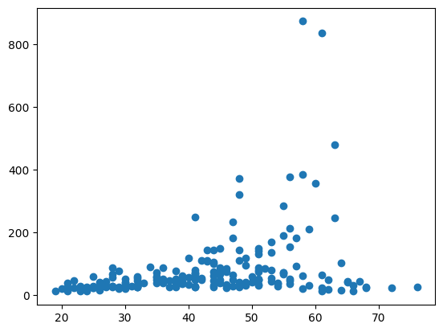

from dataidea.packages import * # imports np, pd, plt etc
from sklearn.linear_model import LogisticRegression
from sklearn.tree import DecisionTreeClassifier
from sklearn.model_selection import train_test_split
from dataidea.datasets import loadDatasetOverview of Machine Learning
demo_df = loadDataset('demo')cols = {"Age":"age", "Gender":"gender", "Marital Status":"marital_status", "Address":"address",
"Income":"income","Income Category":"income_category", "Job Category":"job_category",}
demo_df.rename(columns=cols, inplace=True)demo_df.columnsIndex(['age', 'gender', 'marital_status', 'address', 'income',
'income_category', 'job_category'],
dtype='object')demo_df.describe() #will only give us numerical values| age | address | income | income_category | job_category | |
|---|---|---|---|---|---|
| count | 200.000000 | 200.000000 | 200.000000 | 200.000000 | 200.000000 |
| mean | 42.475000 | 11.485000 | 76.305000 | 2.520000 | 1.950000 |
| std | 12.801122 | 10.365665 | 107.554647 | 1.065493 | 0.781379 |
| min | 19.000000 | 0.000000 | 11.000000 | 1.000000 | 1.000000 |
| 25% | 32.000000 | 3.000000 | 27.000000 | 2.000000 | 1.000000 |
| 50% | 43.000000 | 9.000000 | 44.500000 | 2.000000 | 2.000000 |
| 75% | 51.000000 | 17.000000 | 76.000000 | 4.000000 | 3.000000 |
| max | 76.000000 | 51.000000 | 873.000000 | 4.000000 | 3.000000 |
demo_df.select_dtypes(include=["object"])| gender | marital_status | |
|---|---|---|
| 0 | f | 1 |
| 1 | m | 0 |
| 2 | f | no answer |
| 3 | m | 1 |
| 4 | m | no answer |
| ... | ... | ... |
| 195 | f | 0 |
| 196 | f | 1 |
| 197 | f | 1 |
| 198 | m | 0 |
| 199 | m | 0 |
200 rows × 2 columns
demo_df.select_dtypes(include=["object"]).describe()| gender | marital_status | |
|---|---|---|
| count | 200 | 200 |
| unique | 4 | 3 |
| top | f | 0 |
| freq | 99 | 102 |
demo_df["gender"].value_counts().indexIndex(['f', 'm', ' f', ' m'], dtype='object', name='gender')demo_df.gender.unique()array(['f', 'm', ' f', ' m'], dtype=object)demo_df2 = demo_df.replace(to_replace=" f", value="f")demo_df2.gender.unique()array(['f', 'm', ' m'], dtype=object)gender_col = demo_df2.gender.replace(to_replace=" m", value="m")
gender_col0 f
1 m
2 f
3 m
4 m
..
195 f
196 f
197 f
198 m
199 m
Name: gender, Length: 200, dtype: objectgender_col.unique()array(['f', 'm'], dtype=object)demo_df2["gender"] = gender_coldemo_df2.gender.unique()array(['f', 'm'], dtype=object)demo_df2.marital_status.unique()array(['1', '0', 'no answer'], dtype=object)demo_df2.marital_status.value_counts()marital_status
0 102
1 93
no answer 5
Name: count, dtype: int64demo_df2.select_dtypes(include=["number"]) #"float64","int64"| age | address | income | income_category | job_category | |
|---|---|---|---|---|---|
| 0 | 55 | 12 | 72.0 | 3.0 | 3 |
| 1 | 56 | 29 | 153.0 | 4.0 | 3 |
| 2 | 28 | 9 | 28.0 | 2.0 | 1 |
| 3 | 24 | 4 | 26.0 | 2.0 | 1 |
| 4 | 25 | 2 | 23.0 | 1.0 | 2 |
| ... | ... | ... | ... | ... | ... |
| 195 | 45 | 3 | 86.0 | 4.0 | 3 |
| 196 | 23 | 2 | 27.0 | 2.0 | 1 |
| 197 | 66 | 32 | 11.0 | 1.0 | 2 |
| 198 | 49 | 4 | 30.0 | 2.0 | 1 |
| 199 | 45 | 1 | 147.0 | 4.0 | 3 |
200 rows × 5 columns
demo_df2.isna().sum()age 0
gender 0
marital_status 0
address 0
income 0
income_category 0
job_category 0
dtype: int64plt.boxplot(demo_df2["income"]){'whiskers': [<matplotlib.lines.Line2D>,
<matplotlib.lines.Line2D>],
'caps': [<matplotlib.lines.Line2D>,
<matplotlib.lines.Line2D>],
'boxes': [<matplotlib.lines.Line2D>],
'medians': [<matplotlib.lines.Line2D>],
'fliers': [<matplotlib.lines.Line2D>],
'means': []}#exercise: function to calucate outliers:
#lower fence = Q1 - 1.5(Q3-Q1)
#upper fence = Q3 + 1.5(Q3-Q1)def getOutliers(column):
q1 = np.quantile(column, 0.25)
q3 = np.quantile(column, 0.75)
interquantile_range = q3-q1
lower_fence = q1 - 1.5*interquantile_range
upper_fence = q3 + 1.5*interquantile_range
outlier_indicies = np.where((column < lower_fence) | (column > upper_fence))[0]
outliers = np.array(column[outlier_indicies])
return outliers, outlier_indiciesoutliers, indexes = getOutliers(demo_df2.income)demo_df3 = demo_df2.drop(indexes)plt.hist(demo_df2.age, bins = 20, edgecolor = "black")(array([ 7., 12., 11., 17., 11., 10., 10., 17., 14., 18., 14., 17., 14.,
6., 7., 6., 5., 2., 1., 1.]),
array([19. , 21.85, 24.7 , 27.55, 30.4 , 33.25, 36.1 , 38.95, 41.8 ,
44.65, 47.5 , 50.35, 53.2 , 56.05, 58.9 , 61.75, 64.6 , 67.45,
70.3 , 73.15, 76. ]),
<BarContainer object of 20 artists>)plt.hist(demo_df3.income, bins=20, edgecolor="black")(array([11., 24., 37., 12., 18., 18., 8., 9., 9., 9., 6., 2., 2.,
2., 4., 2., 0., 1., 2., 5.]),
array([ 11. , 17.85, 24.7 , 31.55, 38.4 , 45.25, 52.1 , 58.95,
65.8 , 72.65, 79.5 , 86.35, 93.2 , 100.05, 106.9 , 113.75,
120.6 , 127.45, 134.3 , 141.15, 148. ]),
<BarContainer object of 20 artists>)plt.scatter(demo_df2.age, demo_df2.income)
plt.show()
plt.scatter(demo_df3.age, demo_df3.income)
plt.show()demo_df2 = demo_df2[demo_df.income<600]demo_df2.isna().sum()age 0
gender 0
marital_status 0
address 0
income 0
income_category 0
job_category 0
dtype: int64demo_df2.head()| age | gender | marital_status | address | income | income_category | job_category | |
|---|---|---|---|---|---|---|---|
| 0 | 55 | f | 1 | 12 | 72.0 | 3.0 | 3 |
| 1 | 56 | m | 0 | 29 | 153.0 | 4.0 | 3 |
| 2 | 28 | f | no answer | 9 | 28.0 | 2.0 | 1 |
| 3 | 24 | m | 1 | 4 | 26.0 | 2.0 | 1 |
| 4 | 25 | m | no answer | 2 | 23.0 | 1.0 | 2 |
demo_df4 = demo_df2[demo_df2.marital_status != 'no answer'].copy()demo_df4.to_csv('../assets/demo_cleaned.csv', index=False)demo_df4.sample(n=5)| age | gender | marital_status | address | income | income_category | job_category | |
|---|---|---|---|---|---|---|---|
| 119 | 53 | f | 0 | 34 | 136.0 | 4.0 | 3 |
| 6 | 44 | m | 1 | 17 | 144.0 | 4.0 | 3 |
| 80 | 38 | m | 0 | 7 | 42.0 | 2.0 | 1 |
| 76 | 19 | f | 1 | 0 | 13.0 | 1.0 | 1 |
| 59 | 28 | m | 0 | 9 | 28.0 | 2.0 | 2 |
demo_df4.info()<class 'pandas.core.frame.DataFrame'>
Index: 193 entries, 0 to 199
Data columns (total 7 columns):
# Column Non-Null Count Dtype
--- ------ -------------- -----
0 age 193 non-null int64
1 gender 193 non-null object
2 marital_status 193 non-null object
3 address 193 non-null int64
4 income 193 non-null float64
5 income_category 193 non-null float64
6 job_category 193 non-null int64
dtypes: float64(2), int64(3), object(2)
memory usage: 12.1+ KBdemo_df4['marital_status'] = demo_df4.marital_status.astype('int')demo_df5 = demo_df4.copy()demo_df5 = pd.get_dummies(data=demo_df5,
columns=['gender'],
drop_first=True,
dtype='int'
)demo_df5.sample(n=5)| age | marital_status | address | income | income_category | job_category | gender_m | |
|---|---|---|---|---|---|---|---|
| 51 | 48 | 0 | 22 | 109.0 | 4.0 | 2 | 1 |
| 183 | 38 | 1 | 18 | 77.0 | 4.0 | 3 | 0 |
| 85 | 30 | 0 | 4 | 23.0 | 1.0 | 1 | 0 |
| 17 | 21 | 0 | 1 | 37.0 | 2.0 | 1 | 1 |
| 156 | 43 | 1 | 5 | 144.0 | 4.0 | 3 | 1 |
logistic_regression_model = LogisticRegression()X = demo_df5.drop('marital_status', axis=1)
y = demo_df5.marital_statusX_train, X_test, y_train, y_test = train_test_split(X, y, test_size=0.25)logistic_regression_model.fit(X, y)LogisticRegression()In a Jupyter environment, please rerun this cell to show the HTML representation or trust the notebook.
On GitHub, the HTML representation is unable to render, please try loading this page with nbviewer.org.
LogisticRegression()
logistic_regression_model.score(X, y) * 10054.40414507772021logistic_regression_model.fit(X_train, y_train)LogisticRegression()In a Jupyter environment, please rerun this cell to show the HTML representation or trust the notebook.
On GitHub, the HTML representation is unable to render, please try loading this page with nbviewer.org.
LogisticRegression()
logistic_regression_model.score(X_test, y_test)0.42857142857142855demo_df2[demo_df2.marital_status == 'no answer']| age | gender | marital_status | address | income | income_category | job_category | |
|---|---|---|---|---|---|---|---|
| 2 | 28 | f | no answer | 9 | 28.0 | 2.0 | 1 |
| 4 | 25 | m | no answer | 2 | 23.0 | 1.0 | 2 |
| 7 | 46 | m | no answer | 20 | 75.0 | 4.0 | 3 |
| 8 | 41 | m | no answer | 10 | 26.0 | 2.0 | 2 |
| 9 | 29 | f | no answer | 4 | 19.0 | 1.0 | 2 |
logistic_regression_model.predict([[28, 9, 28, 2, 1, 0]])/home/jumashafara/venvs/programming_for_data_science/lib/python3.10/site-packages/sklearn/base.py:493: UserWarning: X does not have valid feature names, but LogisticRegression was fitted with feature names
warnings.warn(array([0])predictions = logistic_regression_model.predict(X_test)# X_test['predicted_marial_status'] = predictionsdecision_tree_classifier = DecisionTreeClassifier()decision_tree_classifier.fit(X_train, y_train)DecisionTreeClassifier()In a Jupyter environment, please rerun this cell to show the HTML representation or trust the notebook.
On GitHub, the HTML representation is unable to render, please try loading this page with nbviewer.org.
DecisionTreeClassifier()
decision_tree_classifier.score(X_test, y_test)0.4897959183673469decision_tree_classifier.predict(X=[[28, 9, 28, 2, 1, 0]])/home/jumashafara/venvs/programming_for_data_science/lib/python3.10/site-packages/sklearn/base.py:493: UserWarning: X does not have valid feature names, but DecisionTreeClassifier was fitted with feature names
warnings.warn(array([0])decision_tree_classifier.predict(X=X_test)array([1, 0, 1, 1, 0, 1, 0, 0, 0, 1, 1, 0, 1, 0, 0, 0, 1, 0, 0, 0, 0, 0,
1, 1, 1, 0, 1, 0, 0, 1, 1, 0, 0, 1, 0, 1, 0, 1, 0, 1, 0, 0, 1, 1,
0, 0, 0, 1, 1])# take in X_test, y_test
# predictions on X_test
# true values ie y_test
# match which are correct
# correct/total